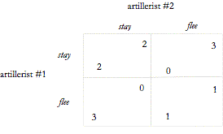

Теория игр была использована для анализа функции морали. Хорошим примером является появление Эдны Ульман-Маргалит «Появление норм», в которой она утверждает, что моральные нормы позволяют агентам сотрудничать и координировать свои действия в ситуациях, когда преследование собственных интересов мешает этому (Ullmann-Margalit 1977). Ее классический пример - это два артиллериста, которым грозит выбор: бежать от наступающего врага или оставаться и управлять своим оружием. Их пушка расположена в стратегически важном проходе. Если оба остаются, у них есть значительный шанс получить ранения, но несомненно, что продвижение противника будет остановлено. Если оба будут бежать, противник сможет взять горный перевал, настигнуть и захватить их. Если только один из них останется, а другой убежит, храбрый артиллерист умрет в бою, но у другого стрелка будет достаточно времени, чтобы сбежать безопасно. Предположим, что оба пытаются пережить это испытание, желательно невредимыми, тогда у каждого солдата есть причина бежать. Причина этого в том, что они занимаются дилеммой заключенного (см. 1). У каждого наводчика есть выбор - убежать или остаться и бороться. Этот выбор представлен в строках для стрелка #1 и столбцах для стрелка #2. Каждая ячейка в матрице представляет результат пары выборов. Число в нижнем левом углу каждой ячейки показывает, как наводчик #1 оценивает этот результат по сравнению с другими возможными результатами - в условных единицах «полезности». Число в правом верхнем углу представляет рейтинг этого результата на #2.

Рассмотрим случай #1. Предположим, что #2 решает остаться и сражаться. В таком случае, #1 лучше бежать. Он выживет, не пострадав. В формальном представлении матрицы он обеспечит более высокий рейтинг (3, а не 2). Предположим, что #2 решает бежать, тогда и #1 лучше всего бежать. Он выживет в битве, хотя он будет заключен в тюрьму на время войны. Если бы он остался и сражался, он бы точно умер, а убегая, он получит более высокий рейтинг (1 вместо 0). Наводчик #2 находится в том же положении, что и #1: для него также, как и для другого, лучшая стратегия всегда бежать. Как видим, каждому отдельному стрелку было бы лучше убежать, независимо от того, что делает другой. Тем не менее, верно, а для некоторых, парадоксально, - что обеим было бы лучше, если бы оба стояли на своих местах. Результат индивидуально рационального действия является Парето-неэффективным (или субоптимальным).
Предположим, что оба понимают суть своего затруднительного положения. Поскольку они видят, что у каждого есть веские причины убежать, они могут попытаться исключить эту возможность. Например, они могли бы приковать друг друга к пушке для предотвращения бегства. Ульман-Маргалит показал, что положение артиллеристов (дилемма заключенного) является структурным эквивалентом многих повседневных взаимодействий, управляемых моралью. Более того, так же, как взаимное сцепление обязывает артиллеристов оставаться и сражаться, нравственность обязывает агентов избегать Парето-неэффективных или неоптимальных результатов. С этой точки зрения функция нравственности заключается в предотвращении ошибок рациональности (Mackie 1977).